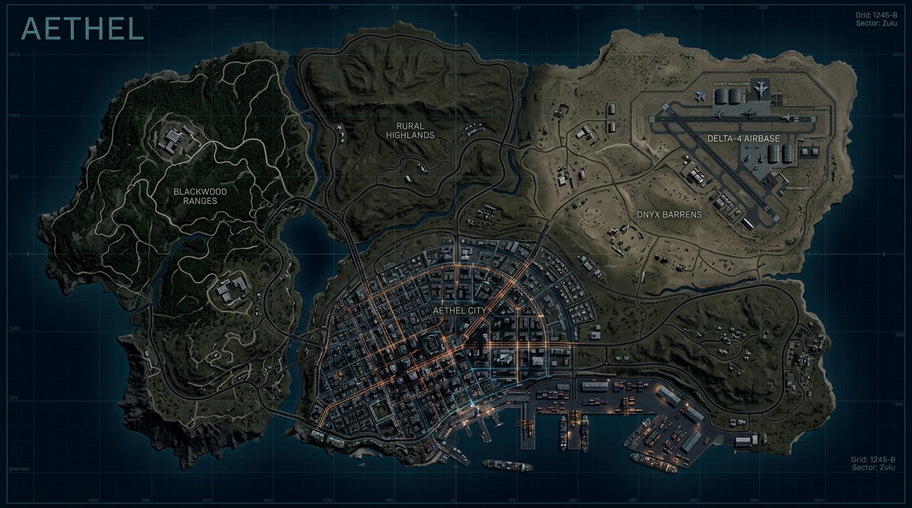

ZONA RESTRINGIDA (150m)
No puedes reaparecer aquí (jugadores estándar)
☠
PUNTO DE TU MUERTE
OPCIONES DE DESPLIEGUE
🔒 Requiere Permisos de Administrador / VIP
SELECCIONAR ZONA DE REAPARICIÓN
A más de 150m